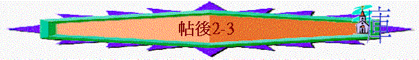

|
在兇惡的世代中要堅守信仰 |
|||
|
面對逼迫的人 |
面對迷惑的人 |
面對兇惡的人 |
面對悖逆的人 |
|
1:1-12 |
2:1-17 |
3:1-5 |
3:6-18 |
二.面對迷惑的人----要堅守主道(2)
「弟兄們，論到我們主耶穌基督降臨和我們到他那��聚集，」2:1
∼前文提及主耶穌降臨的事，保羅藉此引申有人藉主的降臨和信徒將來聚集見主的事迷惑信徒
1.假先知的迷惑(2:1-3)
A.他們的方式
「我勸你們：無論有靈、有言語、有冒我名的書信，說主的日子現在到了，不要輕易動心，也不要驚慌。」2:2
「耶穌回答說：「你們要謹慎，免得有人迷惑你們。」太24:4
a.
透過「靈」----他們可能稱被聖靈感動說出預言，此靈應是冒充
的
b.透過「言語」----用直接的言語說出歪曲的真理
c.透過「冒我的書信」----原來當時代會有假先知冒保羅的名發出
書信
B.他們的內容
「主的日子現在到了……」2:2
「但那日子，那時辰，沒有人知道，連天上的使者也不知道，子也不知道，惟獨父知道」太24:36
∼「現在到了」----有已經開始並且正進行中，但太24:36說那日子那時辰是沒有人知道的，而若主的日子真是到了，帖後1:7所說主從天上在火焰中顯現卻沒有發生，所以主的日子是仍未到，假先知所說的是假真理
C.信徒的回應
a.不輕易動心
∼「輕易」----有迅速及快的意思；「動心」----有被搖動及攪擾的意思
b.不要驚慌
「你們也要聽見打仗和打仗的風聲，總不要驚慌；因為這些事是必須有的，只是末期還沒有到。」太24:6
∼有內心被攪動
c.不要被誘惑
「人不拘用甚麼法子，你們總不要被他誘惑；因為那日子以前，必有離道反教的事，並有那大罪人，就是沉淪之子，顯露出來。」帖後2:3
∼假先知不拘用甚麼方法，信徒不要被他誘惑(有欺騙的意思)
∼而在主回來前，必有離經叛道的事發生，人不單離棄真道，更會引誘人離棄，信徒不要受動搖
2.大罪人的顯露(2:3-12)
「人不拘用甚麼法子，你們總不要被他誘惑；因為那日子以前，必有離道反教的事，並有那大罪人，就是沉淪之子，顯露出來。」2:3
「我看見獸的七頭中，有一個似乎受了死傷，那死傷卻醫好了。全地的人都希奇跟從那獸，又拜那龍─因為牠將自己的權柄給了獸，也拜獸，說：「誰能比這獸，誰能與牠交戰呢？」又賜給牠說誇大褻瀆話的口，又有權柄賜給牠，可以任意而行四十二個月。獸就開口向 神說褻瀆的話，褻瀆 神的名並他的帳幕，以及那些住在天上的。」啟13:3-6
∼之前提及在末世中有假先知出現，此段更引出在主回來時，會有一位「大罪人」出現，他又稱為「不法的人」，此「大罪人」是指一位有罪特質的人，他是誰？他是沉淪之子，「沉淪」有毁壞及滅亡的意思，而他是在末後才顯露出來
∼而啟13及17章中也提及在末世中，有一獸顯露，後世稱為「敵基督」，他不是撒但，但是代表撒但在地上作敵擋基督與選民的工作，若根據帖後2:3-12的形容，這大罪人與啟13所指的那獸應同是指今天所講的敵基督
A.他的特質
a.扺擋主
「他是抵擋主，高抬自己，超過一切稱為神的和一切受人敬拜的，甚至坐在 神的殿��，自稱是 神。」2:4
∼扺擋有反對的意思，他是反對主的，對主的事及屬主的人及主自己----他也會反對的
b.高舉己
∼他會高舉自己，自稱自己為神，要人拜他
c.迷惑人
「這不法的人來，是照撒但的運動，行各樣的異能、神蹟，和一切虛假的奇事，」2:9
(1)照撒但工作
∼「運動」----有工作、行動，運作意思，那大罪人會根據撒但的工作及計劃迷惑信徒
(2)行各樣的異能
(3)行不義詭詐
∼「詭詐」----有欺騙及迷惑的意思，他也用不義的欺騙方法，引誘人離棄真道
B.他的信從者
「並且在那沉淪的人身上行各樣出於不義的詭詐；因他們不領受愛真理的心，使他們得救。故此， 神就給他們一個生發錯誤的心，叫他們信從虛謊，使一切不信真理、倒喜愛不義的人都被定罪。」2:10-12
∼「沉倫的人」----是指一批要滅亡的人
a.不愛真理
∼「不領受愛真理的心」----原文沒有「的心」字眼，他們是拒絶愛真理
b.信從虛謊
「 所以， 神任憑他們逞著心�堛滷□丹璁藕帚漕ヾA以致彼此玷辱自己的身體。」羅1:24
∼他們選擇不愛真埋，神也管教他們，任憑他們繼續不愛真理，因而有錯誤的心，追求虛謊的事
c.倒愛不義
d.被神定罪
C.他的攔阻
「我還在你們那��的時候，曾把這些事告訴你們，你們不記得嗎？現在你們也知道，那攔阻他的是甚麼，是叫他到了的時候才可以顯露。因為那不法的隱意已經發動，只是現在有一個攔阻的，等到那攔阻的被除去，那時這不法的人必顯露出來。主耶穌要用口中的氣滅絕他，用降臨的榮光廢掉他。」2:5-8
∼但那大罪人仍未出現，只隱意發動(秘密地工作)，因為有一個攔阻的攔阻他，聖經沒指是誰，但能攔阻大罪人發動作為，也是信徒所知道的，可能是指教會或聖靈的工作，若是教會，當教會被提後，那大罪人就會顯露，他在地上在沒攔阻情況下會發動他敵擋主的工作
D.他的結局
「那時這不法的人必顯露出來。主耶穌要用口中的氣滅絕他，用降臨的榮光廢掉他。」2:8
「他穿著濺了血的衣服；他的名稱為 神之道。在天上的眾軍騎著白馬，穿著細麻衣，又白又潔，跟隨他。有利劍從他口中出來，可以擊殺列國。他必用鐵杖轄管（轄管：原文是牧）他們，並要踹全能 神烈怒的酒醡。」啟19:13-15
∼「口中的氣」----氣有吹氣及神的靈之意思，可能指主用聖靈的能力如同寶劍擊殺大罪人
3.信徒們的回應(2:13-17)
A.站立得穩
a.得著主恩召
「主所愛的弟兄們哪，我們本該常為你們感謝 神；因為他從起初揀選了你們，叫你們因信真道，又被聖靈感動，成為聖潔，能以得救。神藉我們所傳的福音召你們到這地步，好得著我們主耶穌基督的榮光。」2:13-14
(1)神的揀選
(2)得信真道
(3)成為聖潔
(4)能以得救
(5)將得榮光----得主的榮光應指前文1:9不信的人離開主榮光，信主的人，將來會得主的榮耀與尊貴(如光芒一樣)
∼保羅為信徒從前蒙神揀選，現在得救恩，將來得榮耀而感謝神，所以引申要他們守著這寶貴的救恩
b.堅守所領受
「所以，弟兄們，你們要站立得穩，凡所領受的教訓，不拘是我們口傳的，是信上寫的，都要堅守。」2:15
∼「堅守」----有握住、掌控及堅持的意思
B.求神堅固
「但願我們主耶穌基督和那愛我們、開恩將永遠的安慰並美好的盼望賜給我們的父 神。安慰你們的心，並且在一切善行善言上堅固你們。」2:16-17
∼保羅有以下的願望
a.得神安慰
∼神有愛、有恩、有盼望、有安慰，祂能安慰在末世中患難的人
b.得神堅固
∼信徒現受假先知迷惑，保羅也望神立定他們為主持守的善行與言語，不受惡者攪擾
三.面對兇惡的人----要靠主脫離(3:1-5)
1.願神僕能脫離兇惡
「弟兄們，我還有話說：請你們為我們禱告，好叫主的道理快快行開，得著榮耀，正如在你們中間一樣，也叫我們脫離無理之惡人的手；因為人不都是有信心」3:1-2
A.求主的道快快行開
∼「快快行開」----有努力奔跑及前進的意思
B.求脫離無理惡人手
∼「脫離」----有拯救及保全的意思
∼「人不都是有信心」----應指不是人人都信真理及信神，有些人是無理(邪惡及錯誤的意思)及惡毒的，他們會逼迫傳道的人，保羅求脫離這些惡人的手
2.信真神能堅固信徒
「但主是信實的，要堅固你們，保護你們脫離那惡者。我們靠主深信，你們現在是遵行我們所吩咐的，後來也必要遵行。願主引導你們的心，叫你們愛 神，並學基督的忍耐﹗」3:3-5
A.主的實在與保守
a.主的信實
b.主的堅固
c.主的保守
∼人不都是有信心，但神是信實，祂會保守及堅立祂的兒女到底
∼「惡者」----有邪惡、墮落的意思
B.神僕深信與心願
a.深信信徒能持續遵行主吩咐
「我們靠主深信，你們現在是遵行我們所吩咐的，後來也必要遵行。」3:4
b.願神引導他們愛神及有忍耐
「願主引導你們的心，叫你們愛 神，並學基督的忍耐﹗」3:5
∼信徒面對兇惡及迷惑的人，最需要是對主仍有單純忠貞的愛(不變心)，也需要學主在患難中的忍耐
四.面對悖逆的人----要主內管教(3:6-15)
1.遠離的提醒
「弟兄們，我們奉主耶穌基督的名吩咐你們，凡有弟兄不按規矩而行，不遵守從我們所受的教訓，就當遠離他。」3:6
「我先前寫信給你們說，不可與淫亂的人相交。」林前5:9
「但如今我寫信給你們說，若有稱為弟兄是行淫亂的，或貪婪的，或拜偶像的，或辱罵的，或醉酒的，或勒索的，這樣的人不可與他相交，就是與他吃飯都不可。」林前5:11
∼在教會內，也有一些悖逆的人不守主的吩咐的，保羅勸他們要遠離他，目的是管教他們，引領他們回轉
2.神僕的榜樣
「你們自己原知道應當怎樣效法我們。因為我們在你們中間，未嘗不按規矩而行，也未嘗白吃人的飯，倒是辛苦勞碌，晝夜做工，免得叫你們一人受累。這並不是因我們沒有權柄，乃是要給你們作榜樣，叫你們效法我們。」3:7-9
「他們本是製造帳棚為業。保羅因與他們同業，就和他們同住做工。」徒
18:3
∼保羅自己也成為他們的榜樣，他也沒有用自己使徒的身份，白白吃人的飯，他都是按規矩而行，親手作工，不累著教會。
3.過往的吩咐
「我們在你們那��的時候，曾吩咐你們說，若有人不肯做工，就不可吃飯。」3:10
4.現今的勸戒
「我們靠主耶穌基督吩咐、勸戒這樣的人，要安靜做工，吃自己的飯。」3:12
5.同心的管教
「弟兄們，你們行善不可喪志。若有人不聽從我們這信上的話，要記下他，不和他交往，叫他自覺羞愧。但不要以他為仇人，要勸他如弟兄。」3:13-15
∼信徒見到不守規矩的人，要一同管教他們，而管教中，有以下原則
A.不灰心----「喪志」有灰心意思，可能因管教不守規矩的人，而他們仍不聽教而灰心，又可能他們持守親手作工而其他人不守而灰心
B.不相交----不相交目的是要他受管教下而覺羞愧，行回正路，而「如弟兄」意思是不當他仇人，仍看他如弟兄
結語(3:16-18)
「願賜平安的主隨時隨事親自給你們平安！願主常與你們眾人同在！我─保羅親筆問你們安。凡我的信都以此為記，我的筆跡就是這樣。願我們主耶穌基督的恩常與你們眾人同在！」3:16-18
∼此問安強調保羅親筆寫此書，因當時有冒保羅名寫書信的人迷惑信徒